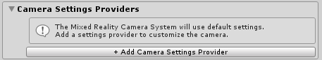

Unity AR camera settings provider
The Unity AR camera settings provider is an experimental MRTK component that enables mixed reality applications to run on Android and iOS devices.
Prerequisites
Before the Unity AR camera settings provider can be enabled in an application, the following steps need to be completed.
Download and import the Microsoft.MixedReality.Toolkit.Providers.UnityAR package, from GitHub or NuGet
In the Unity Package Manager, ensure the following package(s) are installed:
Unity 2018.4 Unity 2019.x Comments AR Foundation AR Foundation For Unity 2018.4, this package is included as a preview XR Legacy Input Helpers AR Core For Android device support AR Kit For iOS device support If using Unity 2019.x, the assembly definition file for the Unity AR provider needs to be modified to have the UnityEngine.SpatialTracking reference added.

Enabling the Unity AR camera settings provider
The following steps presume use of the MixedRealityToolkit object. Steps required for other service registrars may be different.
Select the MixedRealityToolkit object in the scene hierarchy.

Navigate the Inspector panel to the camera system section and expand the Camera Settings Providers section.

Click Add Camera Settings Provider and expand the newly added New camera settings entry.

Select the Unity AR Camera Settings provider

Configuring the Unity AR camera settings provider

Tracking settings
The Unity AR camera settings provider allows configuration options for how tracking is performed. These settings are specific to the Unity AR camera settings provider implementation.
Pose Source
The pose source defines the available types of augmented reality tracking poses. In general, these values map to a component of the device on which the application is running.
The available options are described in the following table.
| Option | Description |
|---|---|
| Center | The center eye of a head mounted device. |
| Color Camera | The color camera of a mobile device. |
| Head | The head eye of a head mounted device, often slightly above the center eye. |
| Left Eye | The left eye of a head mounted device. |
| Left Pose | The left hand controller pose. |
| Right Eye | The right eye of a head mounted device. |
| Right Pose | The right hand controller pose. |
The default value for pose source is Color Camera, to enable a transparent display on mobile devices, such as a phone or tablet.
Tracking Type
The tracking type defines the portion(s) of the pose that will be used for tracking.
The available options are described in the following table.
| Option | Description |
|---|---|
| Position | The position of the device. |
| Rotation | The rotation of the device. |
| Rotation And Position | The position and rotation of the device. |
The default value for tracking type is Rotation And Position, to enable the richest tracking experience.
Update Type
The update type defines at what points, during frame processing, the pose data will be sampled.
The available options are described in the following table.
| Option | Description |
|---|---|
| Before Render | Just before rendering. |
| Update | During the update phase of the frame. |
| Update And Before Render | During the update phase and just before rendering. |
The default value for tracking type is Update And Before Render, to enable the lowest tracking latency.